介紹 AWS Device Farm 如何在雲端中透過實際的行動裝置進行測試，以改善您的 iOS、Android 以及 Web 應用程式的品質。 並實際使用 Remote Access 功能測試你的應用程式在實機的運行狀況。
行動裝置上的應用程式測試，往往碰到最大的困擾就是手機的種類太多、太雜、甚至作業系統與相關應用程式還有版本問題，而以往在進行測試後，最常遇到客戶的反應就是：某某牌沒辦法安裝、另外一個牌沒辦法登入、還有不同作業系統一開就閃退等等奇怪的問題。但這些在QA測試過程中並不一定會發現，因為QA手上有的機種是有限的，有些甚至還在 人工測試的階段，根本不要提機器不夠了，這些主要測試的工人也不夠…。但別提公司根本沒有提供足夠的行動裝置給開發人員或是測試人員可以安心地交付產品，因為這些裝置是買不完的。但今天做手機應用程式真的要這麼徒法煉鋼嗎？
今天就來看看 AWS Device Farm 如何協助我們脫離這樣困境吧。

AWS Device Farm 是AWS 在2015年推出的服務，提供 Mobile App 與 Web 於實體的行動載具上的進行遠端測試的服務，讓我們可以一次在無數個真實的裝置上測試 Android、iOS 或 Web 應用程式並與其做真實的互動，或問題重現。
而最令人高興的是，AWS 目前提供每個帳戶每個月 1,000 device minute 的 Free Trail Service 來試用，這邊試用的範圍是跟正式的功能一模一樣的。
而本篇文章將會介紹AWS Device Farm 並實際操作 Remote Access 來達到遠端實體機器測試作者用 ReactNative 所開發的 iOS App
AWS Device Farm Overview
AWS Device Farm 透過在實際裝置運行時所側錄的完整測試影片、Log、資源與效能紀錄、以及裝置實際運行的截圖我們能在開發完後即時的對市面上所有既有的裝置進行實機測試，而不用先花錢買大量的行動裝置來達到實機測試的效果。
在目前的裝置清單上已經具備超過300種(型號與作業系統版本)，而它也有提供客製化需求，為你量身購買你想要的機型、硬體規格與搭載的作業系統。
透過該服務我們就不用一直重複購買機器、APP 測試環境安裝與OS設定升降版的動作，我們可以選擇上傳APP後測試 Native App或是 Hybrid App ，也可以直接透過手機內的瀏覽器測試 Web 應用程式。開好帳號就可以透過瀏覽器直接遠端進實體機器中操作觀看結果。或是，我們可以撰寫可重複執行的自動測試將其測試案例在上百台以上的實體機器中執行，如此我們便可以快速且方便的地拿到測試結果。
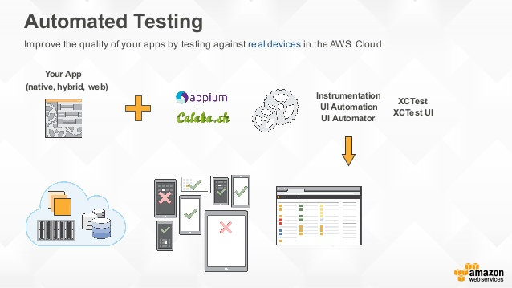
而 Mobile App 的 CI與CD 也是可以跟 Web 或是 Desktop 應用程式一樣更聰明的自動化被建立與整合的：
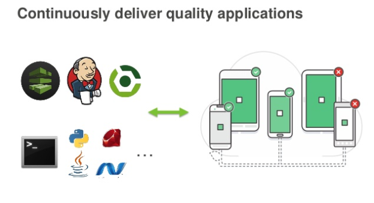
接下來介紹一些相關名詞。
Device Pools
Device Pools 是將多個實體機器建立測試群組的概念，透過 Device Pools 我們可以建立特定的機器群組並指派要執行的測試行為，這方便我們在職行測試時不用每次都一個一個點選加入，可以將常用的機器建立 Device Pools ，並直接下拉選即可。

這邊是新增一組 Device Pools 的畫面:

這邊要注意由於 Device Pools 是在 Test Project 之下，所以是無法跨 Project 使用的。 但同一個 Test Project 不同的 Run&Sessions 則可以共用已建立的 Device Pools。
而系統這邊也幫我們建立了一組預設的Device Pools 叫做 Top Devices 則在新增測試案例時會從下拉看到:
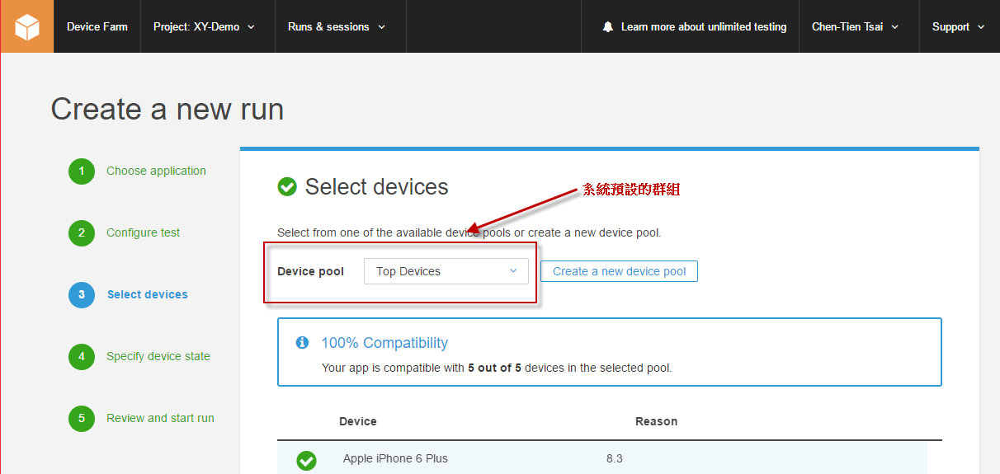
AWS Device Farm - Remote Access
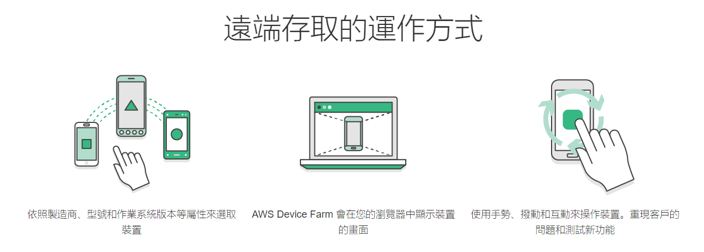
使用上我們需要至 AWS Management Console 前往 Device Farm 服務，這邊要稍微注意一下 Device Farm 目前是沒有分 Region 的服務 :
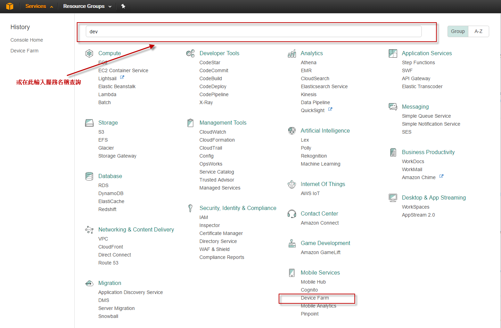
而近來服務會呈現各專案最後的測試狀態:
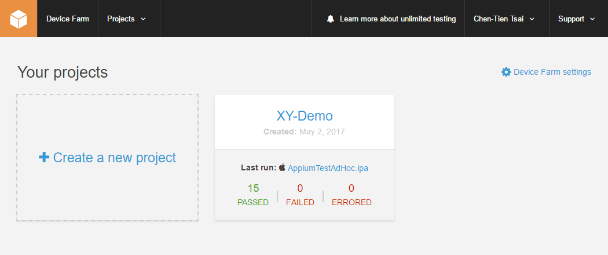
目前的有支援的瀏覽器可操作 AWS Device Farm 的有:
- Internet Explorer 9 or later
- Latest versions of Chrome, Firefox, and Safari.
而我們在 AWS Device Farm 內的實體測試機器所安裝好的瀏覽器包含:
- Android : Chrome
- iOS : Safari
Hands on Lab
這邊讓我們來實際操作一次，一開始需要先建立一個新的 Device Farm 專案(Project):
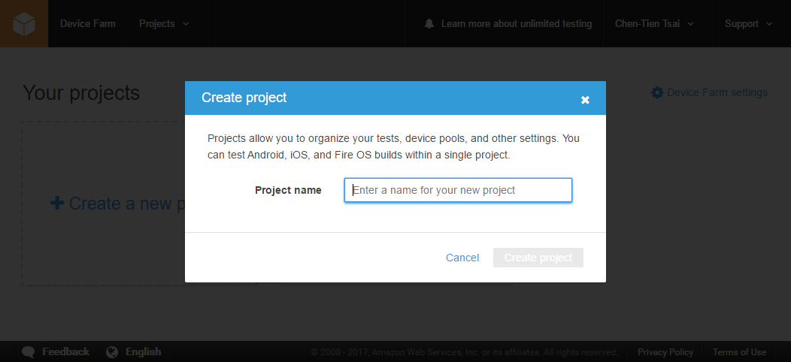
而後開始選擇要做 Automation Testing 還是 Remote Access:
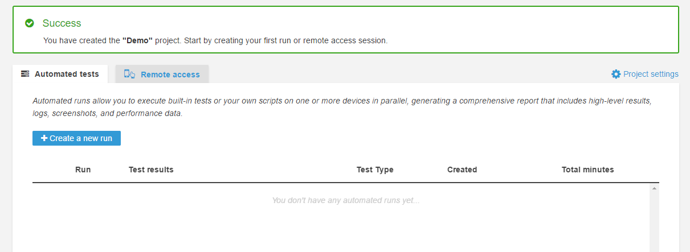
當點選 Remote Access Tab 後則可以開始選擇要測試的實體機器:
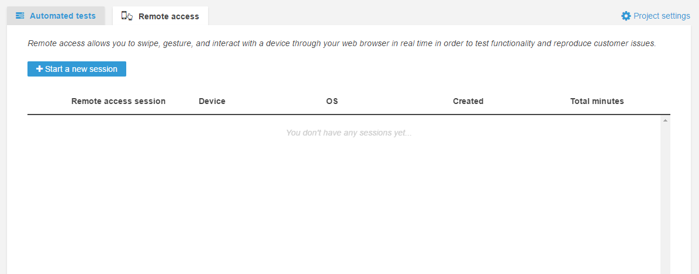
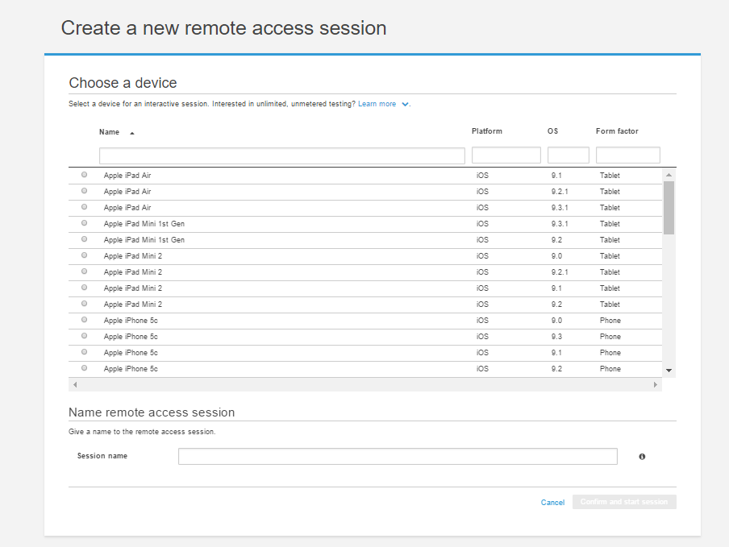
這邊我們直接看實際使用 Remote Access 的過程:
當我們想要結束使用則點選右上角中止即可:
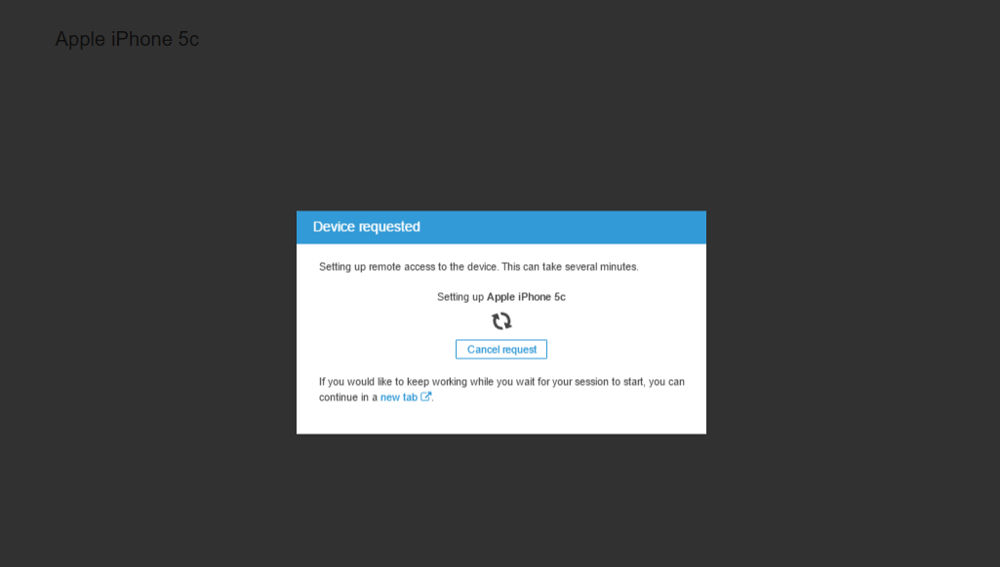
都結束可以回到Project > Setting 去看目前剩餘的小時與相關的執行報告等:
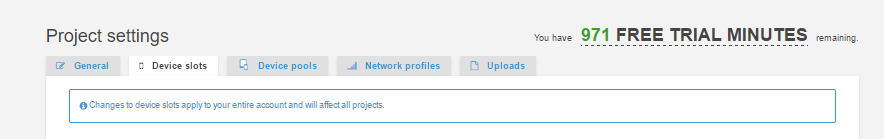
這邊要注意的一下，我們上傳到AWS的 Mobile APP 會在 30天 後自動移除，而所有的測試報告與紀錄會保留 15 個月。
Supported Devices
並非所有機型都支援 Remote Access 功能 ， 但如果有想要的機型不支援可以寫信至客服開啟特定機器做測試。
目前有的機型與版本列表如下:
| Android | iOS |
|---|---|
| HTC One M8 (AT&T) (4.4.4) | Apple iPad Air (9.1) |
| LG G Flex (AT&T) (4.2.2) | Apple iPad Air (9.2) |
| LG G2 (AT&T) (4.4.2) | Apple iPad Air (9.2.1) |
| LG G3 (Sprint) (4.4.2) | Apple iPad Mini 1st Gen (9.2) |
| LG G3 (Sprint) (5.0.1) | Apple iPad Mini 2 (9.0) |
| LG Optimus L70 (MetroPCS) (4.4.2) | Apple iPad Mini 2 (9.1) |
| Motorola DROID Ultra (Verizon) (4.4.4) | Apple iPad Mini 2 (9.2) |
| Samsung Galaxy Note 3 (AT&T) (4.4.2) | Apple iPad Mini 2 (9.2.1) |
| Samsung Galaxy Note 3 (Verizon) (4.4.4) | Apple iPhone 5c (9.0) |
| Samsung Galaxy Note 4 (AT&T) (5.0.1) | Apple iPhone 5c (9.1) |
| Samsung Galaxy Note 4 (Verizon) (5.0.1) | Apple iPhone 5c (9.2) |
| Samsung Galaxy S3 (Sprint) (4.4.2) | Apple iPod Touch 6th Gen (9.1) |
| Samsung Galaxy S3 (T-Mobile) (4.3) | Apple iPod Touch 6th Gen (9.2) |
| Samsung Galaxy S3 (Verizon) (4.4.2) | Apple iPod Touch 6th Gen (9.2.1) |
| Samsung Galaxy S3 LTE (T-Mobile) (4.3) | Apple iPod Touch 6th Gen (9.3) |
| Samsung Galaxy S3 Mini (AT&T) (4.4.2) | Apple iPod Touch 6th Gen (9.3.1) |
| Samsung Galaxy S4 (AT&T) (4.4.2) | |
| Samsung Galaxy S4 (T-Mobile) (4.4.4) | |
| Samsung Galaxy S4 (Verizon) (4.4.2) | |
| Samsung Galaxy S4 Tri-band (Sprint) (4.4.2) | |
| Samsung Galaxy S5 (AT&T) (4.4.2) | |
| Samsung Galaxy S5 (AT&T) (4.4.4) | |
| Samsung Galaxy S5 (Verizon) (4.4.4) | |
| Samsung Galaxy S6 (Verizon) (5.0.2) | |
| Samsung Galaxy Tab 3 10.1” (WiFi) (4.2.2) | |
| Samsung Galaxy Tab 3 10.1” (WiFi) (4.4.2) | |
| Samsung Galaxy Tab 3 7.0” (T-Mobile) (4.4.4) |
但這邊很殘酷的對比一下Microsoft的 Xamarin Test Cloud 目前所提供測試的機器數量，完全比不上…
目前 AWS Device Farm 與 Xamarin Test Cloud 的裝置數量比為 397 : ** 2613 **
AWS Device Farm
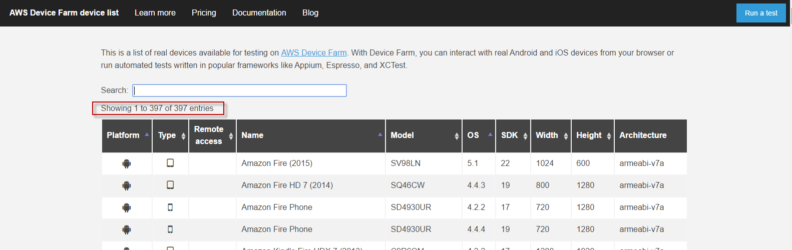
以小米品牌的手機為例:
AWS 上找不到:
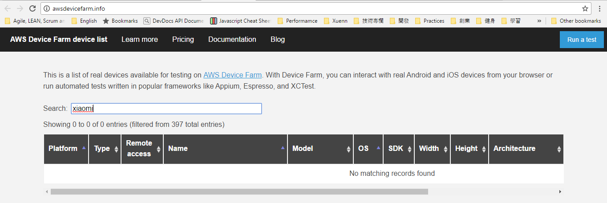
Xamarin Test Cloud
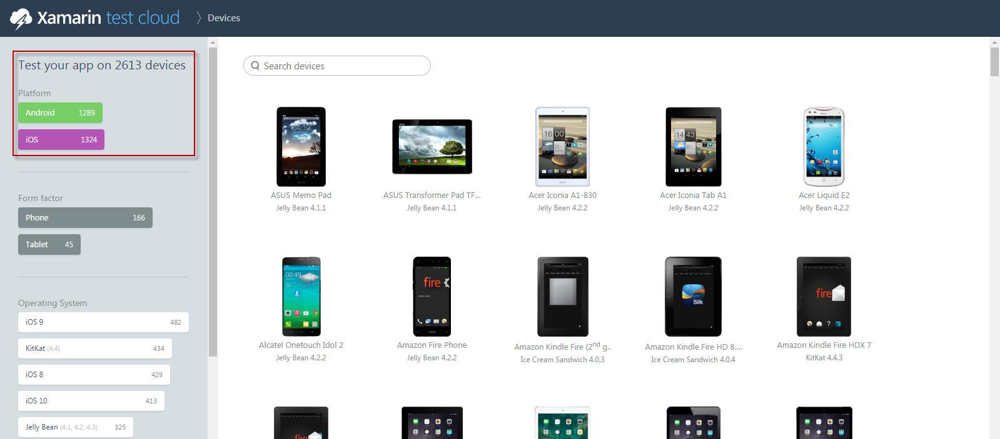
以小米品牌的手機為例:
Xamarin 上找到6台不同型號 :
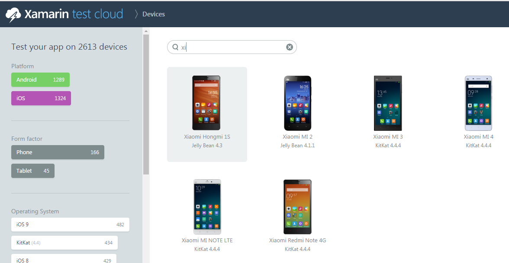
Limits in AWS Device Farm
- 每個上傳測試的 Mobile App 不能大於 4 GB .
- 單次執行測試無機器數量的限制.
- 可測試執行回合無上限
- 每次 Remote Access 的 Session 最多只能使用 60 分鐘
- 每次執行測試，預設的 Automated Testing 執行時間不能超過 60 分鐘 ，但此時間可寫信至官方服務單位請求延長最多至 150 分鐘
Price
看完功能，最後來看一下一個服務的重點 - 價錢

Device Minute
要注意一下，基本的計價的方式是用 device minute 來計算。這時間的算法包含 : 單一機器 install, execute, 與 uninstall app所需的所有時間。所以每台機器除了啟動不用算錢，到完成測試並將該機器關閉時。所以如果我們有五個機器要做一個循環的測&&試從環境開始運行到關閉總共需要五分鐘，那這樣計算出來的總時數就是25分鐘。 目前 $0.17 per device minute 。
基本的 Automated Tests 或是 Remote Access 都是用這樣的計價方式。而這邊前 1000 minutes 是免費的!
Unmetered Plans
而 Automated Tests 除了上面的以分計費，還有包月專案~
Unmetered plans 是讓我們可以無限量的執行我們的測試，不用考慮使用時間。但這邊計價的方式則是看我們使用的 Device Slot。
Device Slot 是指機器同時執行數量，例如我們買10個單位的 Device Slot ，那就代表我們同時能跑的機器數量為10個。因為我們都是可以一個月可以跑無限量次的測試，如果同時能執行的機器越多，能幫我們越快完成測試。
這邊的 Device Slot 依樣可以在每次執行測試時從你定義的 Device Pool 或是 Device List 中逐一挑選。當你覺得當前的執行需要增減 Device Slot 時，也可以任意新增或降低當前的 Device Slot。
Private Device
AWS 還能針對客製化的需求(CPU, RAM, OS或是其他設定)的 Private Device 選項。 Private Device 與 Public Device 是可以混合使用的，每個 Private Device 一個月是 $200 的費用，但我們可以隨時將起停用避免帳單多出費用。
這邊要在強調一個雲端服務的重點，那就是:

軟體開發沒有特效藥(silver bullet)，如果有這樣的體悟跟知道要測試的範圍，就來體驗每個月免費的1000 device minute，來試試實機測試的另一種選擇吧!